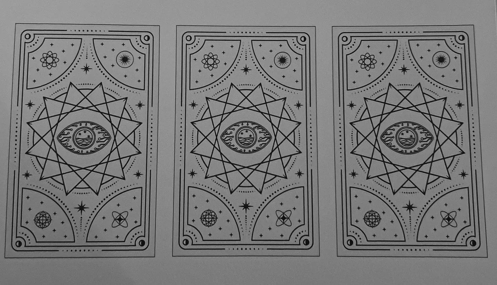
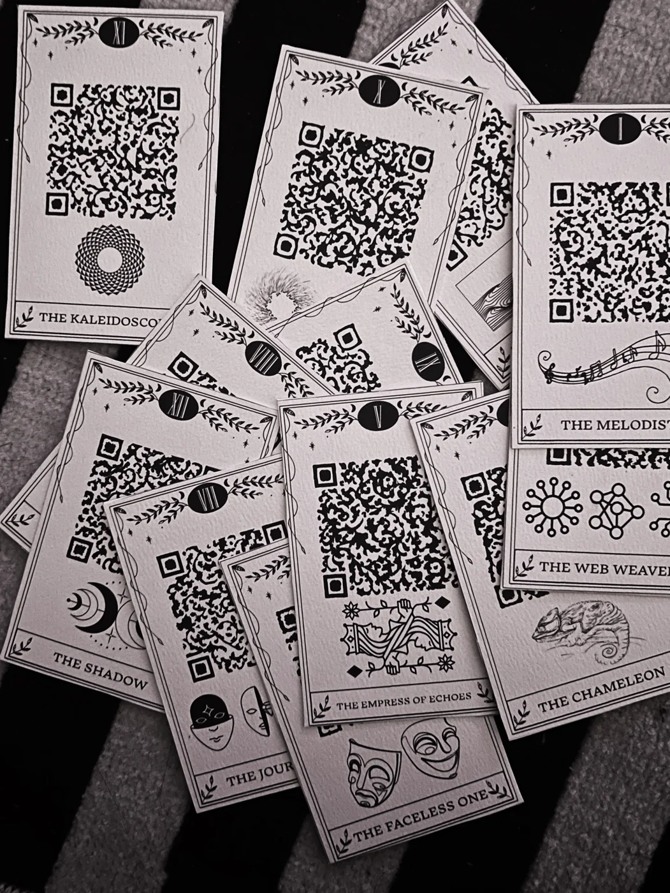
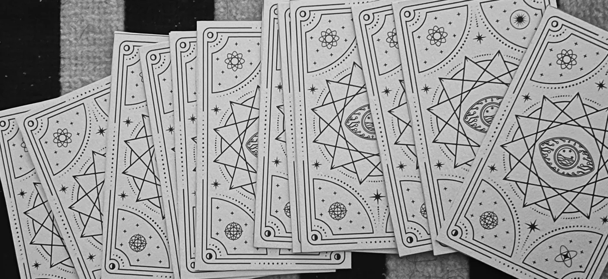
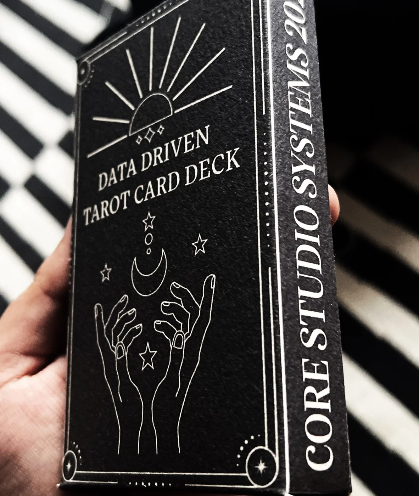

Behind the deck / Design case study
A portrait in
twelve fragments.
I wanted to turn the scattered traces of my digital life into something I could hold, shuffle, and reflect on.
- Outcome
- 12 cards, printed backs, handmade box, companion website
- My role
- Concept, visual design, QR experiments, web design, print and packaging
- Tools
- Illustrator, Stable Diffusion, QR Code Monster, HTML & CSS
01 / The question
Can data become a mirror?
Different platforms know different parts of me: the music I listen to, the communities I spend time in, and the ways I present myself online. I was interested in how those fragments might come together as a portrait.
Tarot felt like a fitting framework. Both tarot and data depend on interpretation, even when the results seem certain. I used that overlap to make a deck about identity, with an upright and reversed meaning for each card.
02 / From habit to archetype
What “data-driven” means here
I started by listing the kinds of data I regularly create, including playlists, social activity, and technology habits, then mapped them to symbolic traits. This is a personal, interpretive design process; the cards are not generated from a statistical model or connected to live accounts.
Different platforms, different selves
I adapt how I present myself to different communities and situations online.
The Chameleon
A symbol of adapting, blending in, and changing roles.
Adaptability ↔ Loss of self
Upright, that flexibility supports discovery. Reversed, constant change can obscure a sense of identity.
03 / The visual system
Making the code part of the card
I chose Art Nouveau-inspired organic lines and decorative borders to sit alongside the technical structure of a QR code. A limited cream-and-black palette keeps the deck consistent.
The difficult part was balancing imagery with scanability. I used Stable Diffusion and QR Code Monster to explore decorative codes, eventually settling on floral patterns. In Illustrator, I converted the patterns into two-color editable shapes and fitted them into a shared card template.

Some illustration assets were hand-drawn; most came from Adobe Stock. The generated QR patterns, illustration assets, and layout each played a different part in the finished design.
04 / Physical to digital
Shuffle. Select. Scan.
Each printed card links to its own reading. The QR code on the box opens the whole collection. That lets the deck keep the physical ritual of choosing a card while revealing another layer online.
I built the companion pages with HTML and CSS and hosted them on GitHub Pages. The card URLs stay consistent so the printed codes continue to point to the same readings.
05 / Making the object
A deck built by hand
I printed the fronts and backs separately on 300gsm cardstock, cut them out, and glued them together. I also drew the box template in Illustrator, allowing room for the deck and adding tabs for assembly. The first version of the box worked, which was a pleasant surprise.



06 / Outcome and reflection
One identity, more than one reading
The finished prototype brings together twelve cards, custom backs, packaging, and a website. During the original making process, I checked that the printed cards scanned. That was a prototype check, rather than a formal study across devices and lighting conditions.
The most useful lesson was that the interaction had to shape the visual design: a beautiful QR pattern still needs to work as a code. The project also gave me a way to question how much a collection of digital habits can really say about a person.
A future version could explore a larger deck or clearer mappings from specific personal-data records to symbols. Personalized decks and augmented reality are possibilities for further exploration, rather than features of this prototype.
References & credits
Sources along the way
Illustration assets include Adobe Stock and hand-drawn elements. QR artwork was developed using Stable Diffusion and QR Code Monster.
- Qr Code Tutorial ↗
- Qr Generator ↗
- Taschen'S Book On Tarot ↗
- Qr Code Model ↗
- Tutorial On Installing Stable Diffusion ↗
- Link To Stable Diffusion ↗
- A Machine For Telling Stories:Tarot And Speculative Fiction By Carrie Sessarego ↗
And a small thank-you to my printer, glue stick, kitchen scissors, and the coffee that got me through the QR experiments.